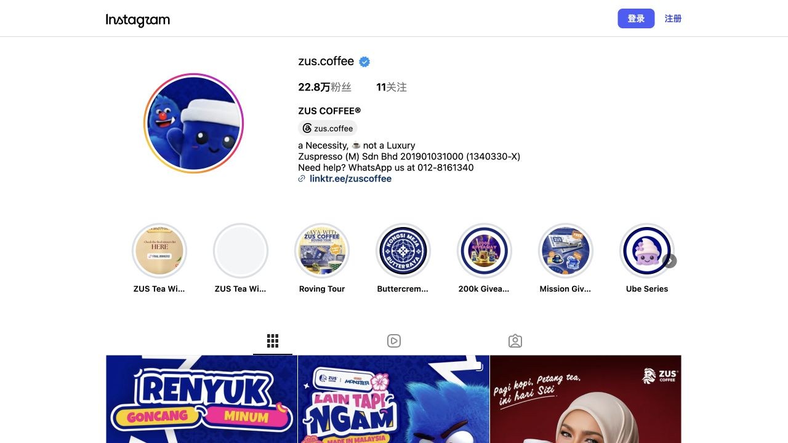
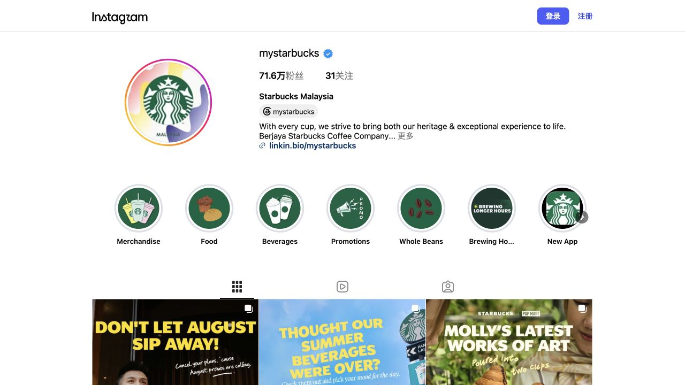
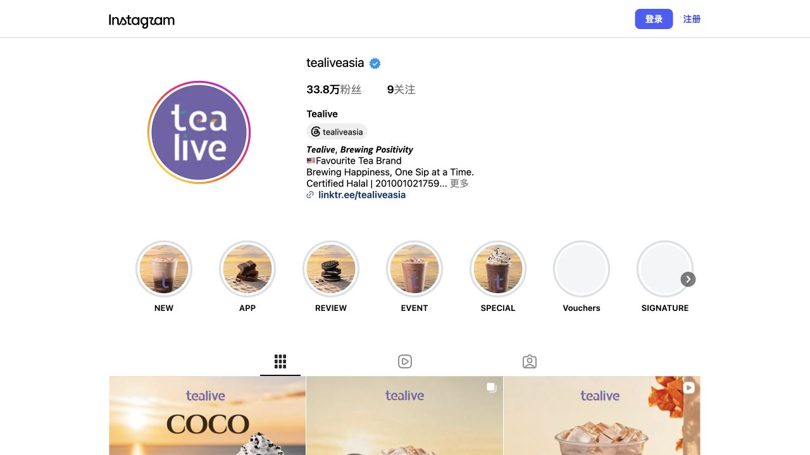
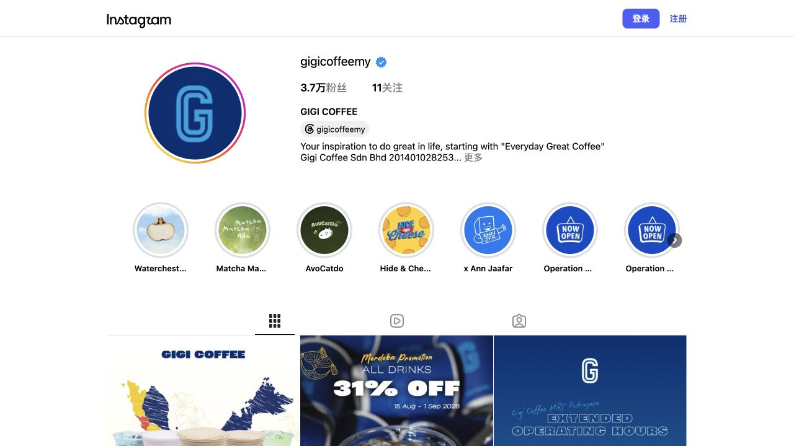

用公开 IG 数据和内容模型推动新品账号增长
项目围绕 ZUS Coffee / ZUS Everywhere 新品内容运营，将竞品 Instagram 公开数据、产品购买入口、用户评论意向和内容发布复盘放到同一套增长框架里，判断哪些内容负责曝光，哪些内容负责互动，哪些内容更适合承接试购。

项目目标
这个项目的业务问题不是“怎么把帖子做漂亮”，而是如何让新品内容在 Instagram 上完成从看见、互动、访问到试购意向的推进。页面中的竞品数据来自 2026-08-29 公开可见 IG 页面和 ZUS 官方入口，项目结果来自个人执行复盘。
账号粉丝增长，形成新品账号冷启动内容资产。
内容复盘轮次，围绕选题、Hook、封面和互动持续调整。
公开 IG 账号采样：ZUS、Starbucks、Tealive、GIGI。
Social AARRR、3x3 内容矩阵、RICE 选题优先级。
竞品 IG 公开采样
竞品后台转化率不可见，因此项目采用“公开流量规模 + 转化意向信号”做判断：粉丝量代表账号流量基础，bio / App / voucher / shop 入口代表承接能力，评论与活动机制代表用户意向和参与可能。
| 账号 | 公开流量信号 | 转化入口 | 对 ZUS Everywhere 的启发 |
|---|---|---|---|
| ZUS Coffee | 22.8w 粉丝；Highlight 覆盖新品、活动、UGC 与本土化主题。 | Linktree、App、活动 Highlight、产品系列内容。 | 可借主品牌信任，但 ZUS Everywhere 需要更明确的新品场景与购买入口。 |
| Starbucks Malaysia | 71.6w 粉丝；内容入口覆盖饮品、食物、周边、促销和 App。 | Link in bio、New App、Promotions、Merchandise。 | 成熟账号把产品线和购买动作拆得很清楚，适合作为信息架构参考。 |
| Tealive | 33.8w 粉丝；Highlight 直接呈现 App、Voucher、Event、Review 与用户话题。 | Linktree、App、Vouchers、MYTEALIVEMOMENT。 | UGC 和优惠入口很前置，适合参考活动传播和评论互动机制。 |
| GIGI Coffee | 3.7w 粉丝；内容更集中在产品系列、联名和门店运营信息。 | Bio link、产品系列 Highlight、Operation Hours。 | 规模较小但产品主题清晰，适合参考新品命名和系列化表达。 |
IG 证据截图
截图用于证明竞品分析不是凭感觉写的。页面里只引用公开可见主页信息，具体数据以截图采样时间为准。



内容增长漏斗
把 Instagram 内容拆成 6 个阶段，每一类内容都要对应一个可观察指标，避免只看点赞或只看视觉。
曝光
看封面、发布时间、Reels 形式能不能进入用户注意力。
互动
看点赞、评论、分享和用户是否愿意 tag 朋友。
兴趣
看收藏、产品问题、口味讨论和返场评论。
主页访问
看内容是否推动用户进入主页理解账号和产品。
购买入口
看 App、商城、优惠券和活动链接是否被清楚承接。
分享传播
看用户是否愿意晒图、投稿、参与话题和被官方转发。
3x3 内容矩阵
矩阵用来决定“这条内容为什么要发”。横向是内容形式，纵向是增长目标，确保新品内容既有品牌感，也能承接运营目标。
口味、包装、饮用方式、购买入口。
通勤、学习、办公、旅行、冰箱囤货。
让用户选择口味、场景和下一条内容。
不同口味和饮用时机怎么选。
用真实日常让产品从货架进入生活。
引导用户问价格、门店、优惠和 App 入口。
强调囤货、组合、限时节点。
把消费动作变成可复用内容模板。
用 tag、hashtag 和 repost 形成二次传播。
内容规划板
根据竞品采样和 ZUS Everywhere 的新品场景，把九宫格规划成“产品清楚 + 场景丰富 + 互动可接”的账号首屏。
RICE 选题优先级
用 Reach、Impact、Confidence、Effort 给内容排序，避免排期只按灵感或美术完成度决定。
| 内容机会 | Reach | Impact | Confidence | Effort | 优先级判断 |
|---|---|---|---|---|---|
| 新品产品线 Carousel | 中 | 高 | 高 | 低 | 优先执行，用于快速解释账号和产品。 |
| 通勤 / 办公 Reels | 高 | 中 | 中 | 中 | 适合扩大曝光和测试场景代入感。 |
| UGC 打卡活动 | 中 | 高 | 中 | 高 | 需要活动机制配合，适合第二阶段放大。 |
| 限时优惠 Story | 中 | 高 | 高 | 低 | 适合承接购买入口和短期转化意向。 |
| 产品口味深度文案 | 低 | 中 | 中 | 低 | 适合做收藏型内容，不作为曝光主力。 |
4 周发布节奏
排期不是把内容塞满，而是让用户在 4 周里依次看到新品是什么、适合什么场景、为什么值得尝试、如何参与和复购。
| 周期 | 内容重点 | 格式 | CTA | 复盘指标 |
|---|---|---|---|---|
| Week 1 | 新品产品线与核心卖点 | Carousel + Static Post | Choose your everyday ZUS moment | 保存率、产品问题、主页访问 |
| Week 2 | 通勤、学习、办公场景种草 | Reels + Story Poll | Tag someone who needs this setup | 互动率、分享、投票参与 |
| Week 3 | UGC 打卡与活动互动 | Story/Repost + Campaign Post | Post and tag the account | 投稿数、tag 数、评论质量 |
| Week 4 | 优惠承接与内容复盘 | Story + Review Dashboard | Tap for bundle details | 链接点击、关注增长、复购意向 |
执行闭环
竞品采样
记录粉丝量、Highlight、bio 入口、内容类型和评论意向。
新品定位
把产品卖点转成便携、日常、囤货、社交分享等场景。
内容生产
完成帖子、Story、Reels 脚本、英文 caption 和发布节奏。
数据复盘
跟踪触达、互动、保存、主页访问、链接点击和粉丝增长。
下一轮优化
加码高互动场景，修正低转化 CTA，把评论问题反馈给运营。
项目产出
| 产出 | 说明 |
|---|---|
| 竞品 IG 数据表 | 整理 4 个账号公开粉丝量、Highlight、转化入口和截图证据。 |
| 内容增长模型 | 建立 Social AARRR 漏斗、3x3 内容矩阵、UGC Loop 和 RICE 选题优先级。 |
| 内容物料规划 | 沉淀 Instagram 九宫格规划、4 周发布节奏、Story 互动和 Reels 脚本方向。 |
| 复盘指标框架 | 按 Reach、Engagement、Intent、Profile Visit、Click、UGC 和 Retention 复盘。 |
| 增长结果 | 账号粉丝增长 1.1w+，并形成新品账号冷启动阶段的内容资产。 |
数据与来源
为了让项目可追溯，页面同时保留公开来源链接和结构化数据表。竞品转化率不作为结论，页面使用公开转化意向信号做判断。
- ZUS Coffee Instagram：粉丝量、bio、Highlight、公开内容与评论信号。
- Starbucks Malaysia Instagram：竞品粉丝规模、产品 / App / 促销入口。
- Tealive Instagram：竞品 App、Voucher、Event、UGC Highlight。
- GIGI Coffee Instagram：竞品产品系列、联名和门店运营信息。
- ZUS Coffee Linktree：官方社媒、App 与品牌入口。
- ZUS Everywhere Signature Mixes：官方产品线与商城入口。
- ZUS NGUPI campaign terms：公开活动与 UGC 参与机制参考。
- ig_competitor_snapshot.csv、content_signal_coding.csv、zus_content_calendar.csv、measurement_framework.csv：项目结构化复盘数据。